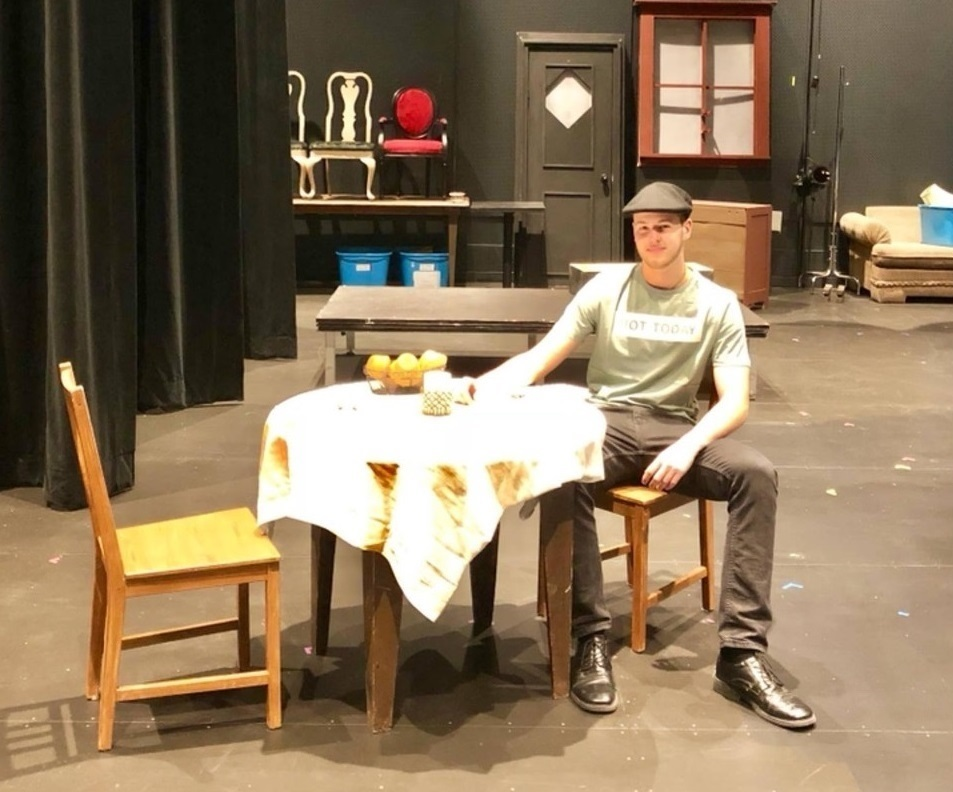
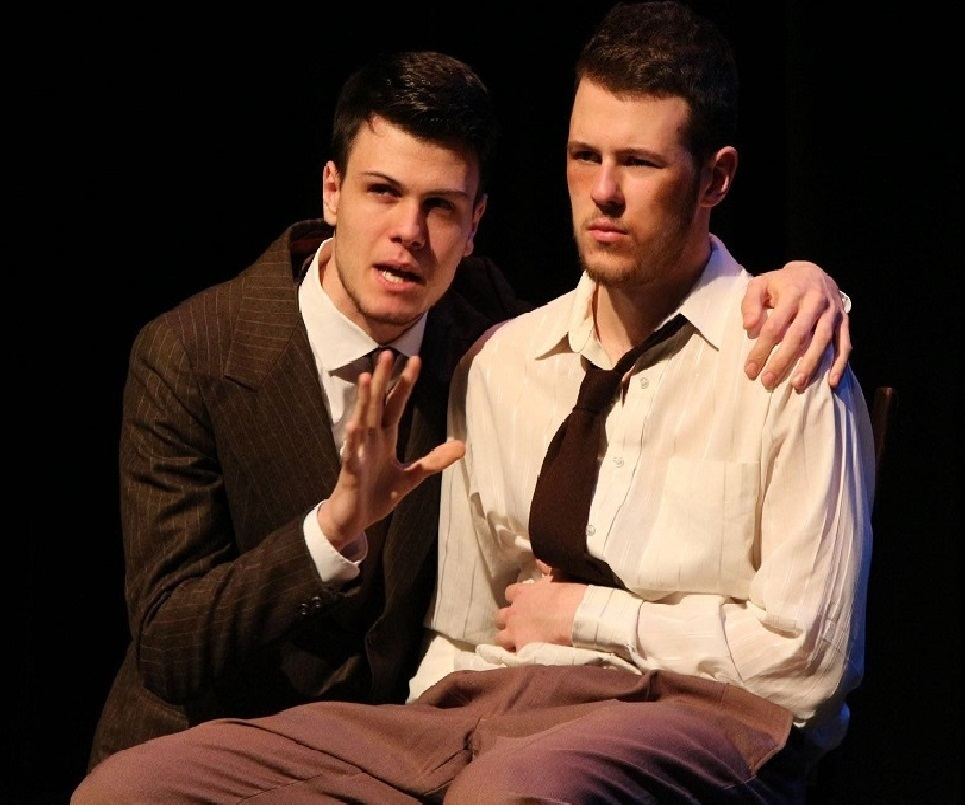
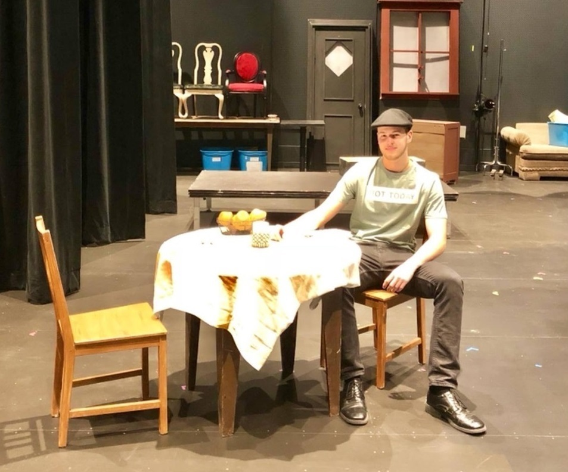
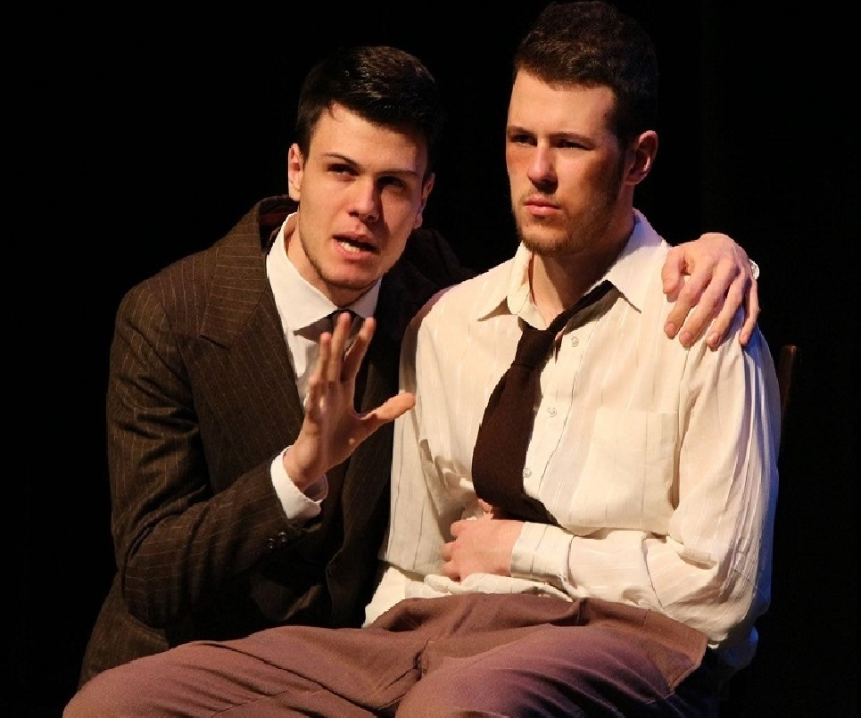

I'm Ivan Nikolic
Bachelor of Recreation and Leisure Studies (Honours),
Community Recreation,
Minor in Dramatic Arts

I am a recent graduate from Brock University, where I have completed a Bachelor in Recreation and Leisure Studies (Honours), Community Recreation, with a Minor in Dramatic Arts. My experience to date demonstrates strong work ethic, exceptional communication and time management skills, as well as high adaptability. I am a strong team player, exemplified by a lifetime of working and engaging in sports, specifically basketball. Other strengths I have been able to develop to a high degree over the years, include being responsible, presentable and a personable individual with a mature attitude.
My experiences as a Residence Don combined with my sports and acting background, have allowed me to fulfil all my previous responsibilities, and engage with prospective students in an effective and positive manner. While studying courses within my program, I have learned the value of collaboration and have been able to improve my skills as a leader. Throughout my academic life, I have always strived to be an outstanding ambassador and role model to other students. My efforts have allowed me to obtain a position as a student prefect and Badger Brigadier at Brock University. Both positions required excellent communication, patience and understanding.
 

Advising students on personal and academic matters, ensuring that Residence Rules are communicated and upheld, promoting a sense of belonging and facilitating inclusive community development, supporting house team members. Working with the psychologist of Ridley, aiding her in fulfilling respective responsibilities. Assisting Basketball Coach. Assisted and taken part in the Ridley Theatre programme.
Planning, leading and implementing core and non-core programs and experiences for students in a small group setting. I was responsible for the general safety and development, growth and skill-achievement of the participants in my group. My goal was to provide high quality indoor and outdoor educational and recreational experience for participants, which focus on Ridley’s core values of caring, honesty, respect and responsibility.
Assisting new students around Campus as well as presenting the University to potential newcomers in the best possible light. Greeting campus visitors and reaching above and beyond to ensure guests feel welcome and important, while demonstrating a thorough knowledge and understanding of Brock content and a well-rounded student experience at all recruitment events.
Helped advertise recreational events around Brock University. Planned a hiking trip, scavenger hunts and study sessions for students. Created mediation classes and physical activities to help promote a balanced lifestyle and good mental health.
Participated in indoor and outdoor activities with different crafts throughout the day, making the events memorable for students and staff.
Participated in an annual fundraising event by Ridley College. Helped organise games, supervise children and table stands, sold tickets, set up and cleaned up for the event.
Aided with the annual theatre play at Ridley by being an acting coach to the students participating in it. It was a fun and enjoyable process to teach acting to children.
Volunteered on Saturdays, worked with Children with disabilities, helping them learn how to enjoy fulfilled lives.
Worked as an Assistant Coach for the Heritage Basketball Academy, training the Under-10 and Under-12 teams. Moreover, I worked as a supportive teacher in a variety of subjects and activities, such as Sport, Drama, Music, Art, Crafts and Team Building in The Heritage Summer School.
Aided with the organisation and management of a fundraising event aimed at raising awareness for at-risk children. In order to do so effectively, I arranged a small theatre production, which resulted in greater engagement by encouraging participation and socialisation. In addition, I organised extracurricular activities (Basketball, English Language) to entertain and educate at-risk children.
Assisted in organising extracurricular activities to get disadvantaged children involved in social and physical activities. My role included giving leadership speeches to help inspire and support children living in an orphanage. I took great pride in my ability to connect and raise the confidence of the children I worked with.
Acting for TV and Film
Recreation and Leisure Studies
Minor in Dramatic Arts
High School
Elementary School
Languages spoken: Serbian (native), English (fluent), French (basic)
I look forward to hearing from you and to arrange
a convenient time to meet and discuss further.
© 2019 Copyright
All Rights Reserved